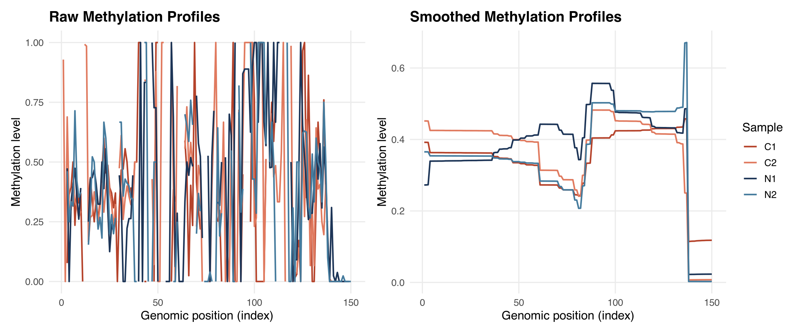

Code
library(DSS)
library(bsseq)
library(ggplot2)
library(tidyr)
library(dplyr)
library(patchwork)比较 BSmooth 平滑前（raw）与平滑后（smoothed）的单个 CpG 位点甲基化 profile，直观展示局部似然平滑对甲基化曲线的影响。
library(DSS)
library(bsseq)
library(ggplot2)
library(tidyr)
library(dplyr)
library(patchwork)使用 DSS 包自带的示例数据（2 个 condition，各 2 个重复），取前 1000 个位点做演示。
path <- file.path(system.file(package = "DSS"), "extdata")
dat1.1 <- read.table(file.path(path, "cond1_1.txt"), header = TRUE)
dat1.2 <- read.table(file.path(path, "cond1_2.txt"), header = TRUE)
dat2.1 <- read.table(file.path(path, "cond2_1.txt"), header = TRUE)
dat2.2 <- read.table(file.path(path, "cond2_2.txt"), header = TRUE)
BSobj <- makeBSseqData(
list(dat1.1, dat1.2, dat2.1, dat2.2),
c("C1", "C2", "N1", "N2")
)[1:1000, ]
BSobjAn object of type 'BSseq' with
1000 methylation loci
4 samples
has not been smoothed
All assays are in-memoryBSobj.smoothed <- BSmooth(BSobj, verbose = TRUE)
meth_raw <- getMeth(BSobj.smoothed, type = "raw")
meth_smoothed <- getMeth(BSobj.smoothed, type = "smooth")
head(meth_raw) C1 C2 N1 N2
[1,] NaN 0.9285714 NaN NaN
[2,] NaN 0.0000000 NaN NaN
[3,] 0.07692308 0.6885246 0.4736842 0.4615385
[4,] 0.36363636 0.3170732 0.0000000 0.2500000
[5,] 0.39393939 0.3000000 0.3333333 0.3333333
[6,] 0.50000000 0.3880597 0.4074074 0.3157895head(meth_smoothed) C1 C2 N1 N2
[1,] 0.3920040 0.4517834 0.2726472 0.3653426
[2,] 0.3919525 0.4517334 0.2727701 0.3653293
[3,] 0.3917129 0.4515007 0.2733426 0.3652677
[4,] 0.3632373 0.4253280 0.3393343 0.3541643
[5,] 0.3632164 0.4253095 0.3393806 0.3541538
[6,] 0.3631800 0.4252771 0.3394618 0.3541355统一配色（瑞士风格配色方案），并列展示平滑前后的甲基化曲线对比。
sample_colors <- c(
"C1" = "#B5432B",
"C2" = "#E07A5F",
"N1" = "#1D3557",
"N2" = "#457B9D"
)
plot_meth <- function(mat, title, n_points = 150) {
df <- as.data.frame(mat)
df <- df[1:n_points, ]
df$pos <- 1:nrow(df)
df_long <- pivot_longer(
df,
cols = c("C1", "C2", "N1", "N2"),
names_to = "sample",
values_to = "meth"
)
ggplot(df_long, aes(x = pos, y = meth, color = sample)) +
geom_line(linewidth = 0.8) +
scale_color_manual(values = sample_colors) +
labs(
x = "Genomic position (index)",
y = "Methylation level",
color = "Sample",
title = title
) +
theme_minimal(base_size = 13) +
theme(
panel.grid.minor = element_blank(),
plot.title = element_text(face = "bold")
)
}p_raw <- plot_meth(meth_raw, "Raw Methylation Profiles")
p_smooth <- plot_meth(meth_smoothed, "Smoothed Methylation Profiles")
p_raw + p_smooth + plot_layout(guides = "collect")